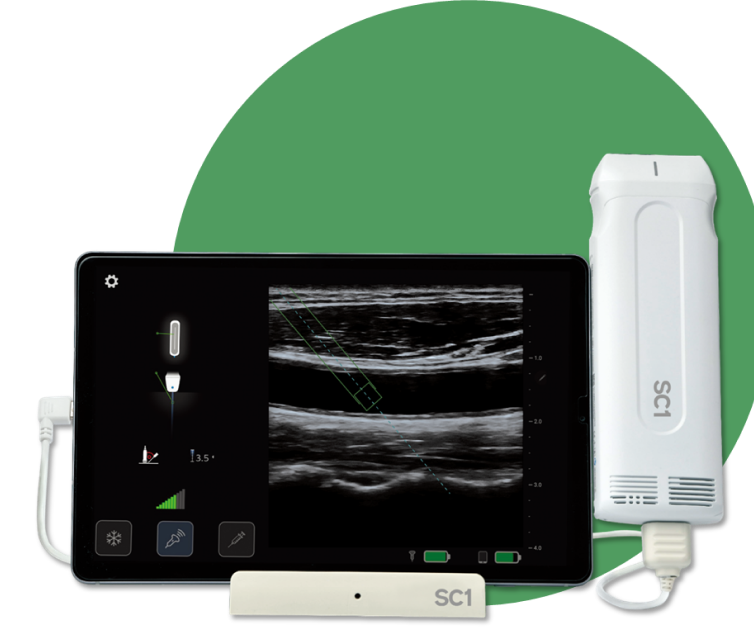
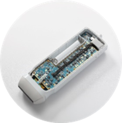
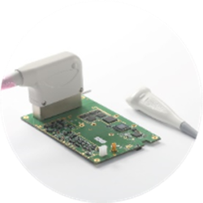
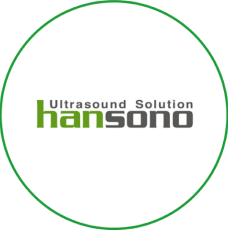

제품

SC1
세계 최초
핸드헬드 내비게이션 초음파
서비스
한소노는 초음파를 기반으로 사업을 하고 싶은 고객에게 초음파 제조 환경을
제공합니다.

SC1 Board
핸드헬드 프로브에 적합한 한소노 보드
✔ USB C 타입 지원
✔ Linear
✔ 128 element / 32 channel

I3 Board
상시 전원으로 작동하는 다목적 한소노 보드
✔ USB C 타입 지원
✔ Linear / Convex
✔ 128 element / 32 channel
Hansono SDK
한소노 보드 제어 및 초음파 영상 렌더링을
지원하는 소프트웨어
✔ Windows, Android, Linux 지원 C++ 라이브러리
✔ .Net, Kotlin 등 다양한 UI 프레임워크 지원
양산 프로세스 서비스
한소노 보드를 생산할 수 있도록
공정을 관리하고 교육하는 서비스

의료기기 규격 지원 서비스
한소노 보드, 소프트웨어를 사용한 시스템이
의료기기 규격을 통과할 수 있도록 지원하는
서비스

유지보수 서비스
한소노 보드 또는 소프트웨어의 품질을
지속적으로 유지보수하는 서비스